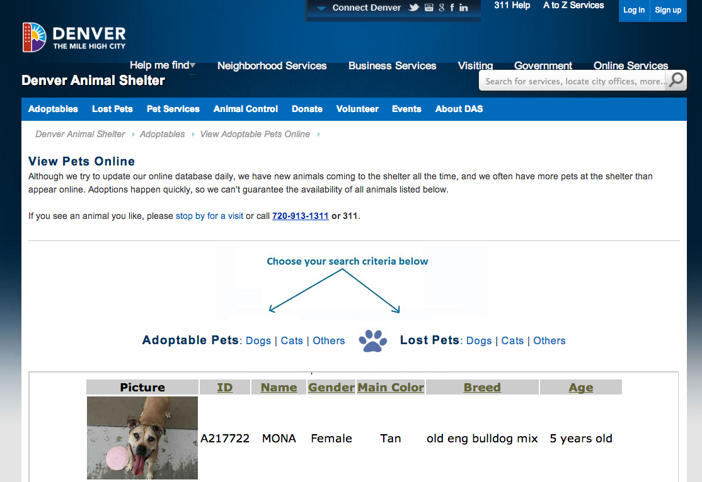

use ↔ to navigate
http://bit.ly/ 1mcupsjune11
open data projects in denver
code for america fellowship
what have we done in Denver so far?
@CutiesInDenver
a twitter bot that shares pics of adoptable animals from the city's shelter
the shelter webpage currently looks like this:

we scraped data and built an API
now we can make this
it's automated & shareable
Evanston
Austin
Boston
...and hella cute
so please follow it @CutiesInDenver
open data and APIs
So what's next?
Street sweeping tickets suck
Raise your hands
(ok, now raise your hands again)
What if you got notifications before street sweeping?
Wow!
Not really a new idea
It's just how things should work
a useful applications solves that obvious problem
This is what the city has online right now
at best it's an alarm clock
at worst, a spambot
8k people signed up
so let's fix it
set it, and forget it
what's missing?
we need data from the city
we have some data, need more data
we're pretty close
want to help?
want to use it?
sign up to get updates: http://bit.ly/ denverstreets
Code for America fellows: Drew (@drewSaysGoVeg), Becky (@boonrs), Kavi (@kavih)